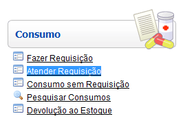
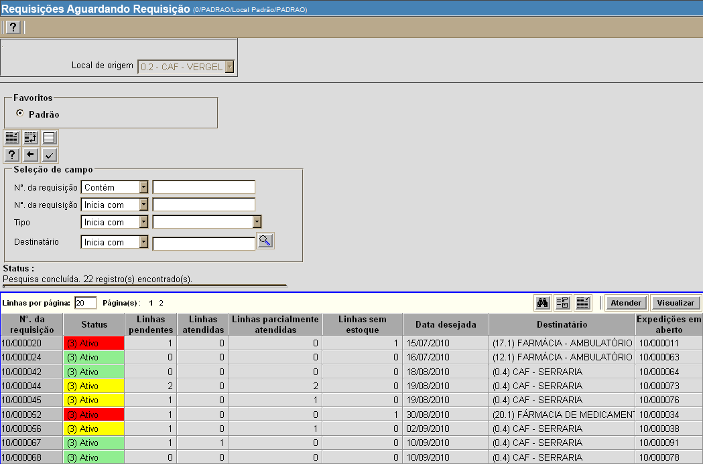
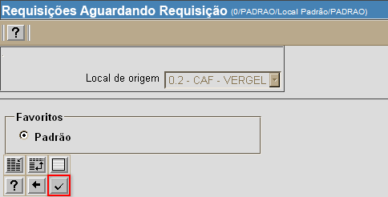
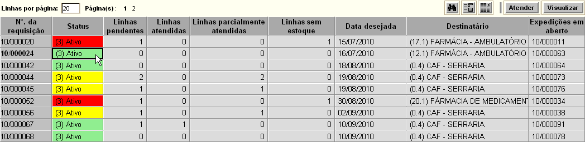
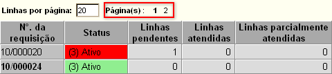
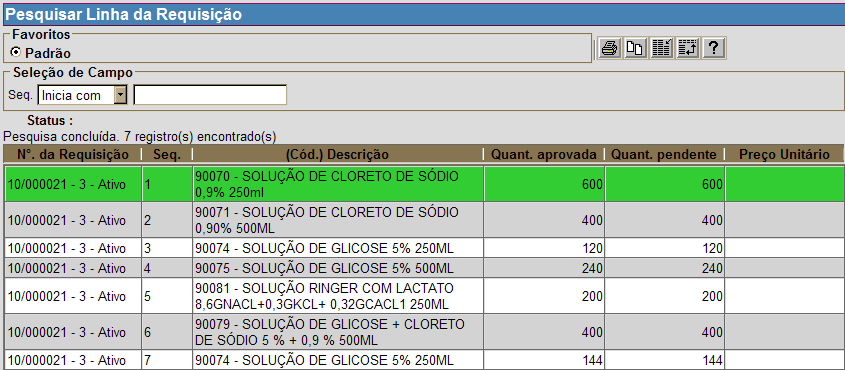
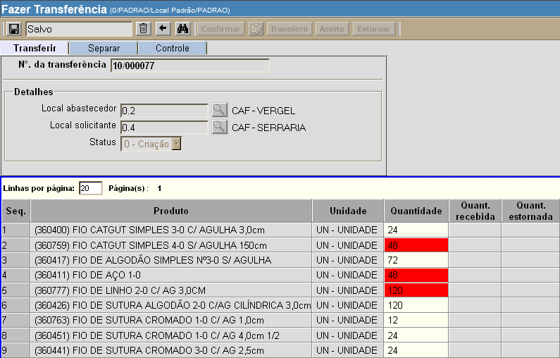
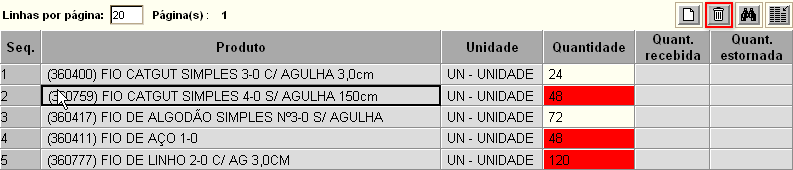
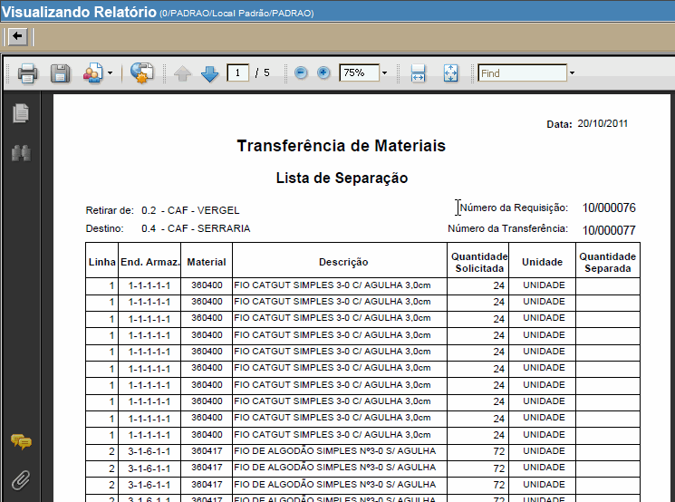
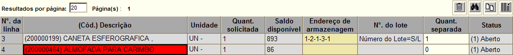

Atender Requisição [ Voltar ]Utilize esta tela para localizar e abrir requisições aguardando consumo. O formulário "Atender Requisição" encontra-se dentro do menu "Consumo". 
Ao clicar no formulário, a seguinte tela será exibida: 
Para visualizar e atender requisições pendentes, siga os passos abaixo: 1º Passo: configure as opções de filtros para localizar as requisições desejadas. Um ou mais filtros poderão ser utilizados concomitantemente. Os filtros disponíveis são:
2º
Passo: após
configurar os filtros da pesquisa, clique no botão  3º Passo: selecione com um clique a linha da requisição que deseja atender. Para selecionar uma requisição, basta clicar em qualquer um dos campos da linha (ver imagem abaixo). 
Observação: observe a quantidade de linhas exibidas por página e, ao lado, a página de exibição (ver imagem abaixo). Clique no número da página desejada para ver as outras requisições aguardando consumo. 
Dica O status das requisições são exibidos em três cores: a) verde: todos os produtos contidos esta requisição possuem estoque o suficiente para atender a demanda. b) amarelo: apenas alguns produtos contidos esta requisição possuem estoque o suficiente para atender a demanda. c) vermelho: nenhum produto desta requisição possui estoque o suficiente para atender a demanda. 4º Passo: após selecionar a requisição, clique no botão  para abrir o registro na tela "Fazer
transferência". Se desejar apenas visualizar os detalhes
da(s) linha(s) da requisição, clique no botão para abrir o registro na tela "Fazer
transferência". Se desejar apenas visualizar os detalhes
da(s) linha(s) da requisição, clique no botão  (ver imagem abaixo). (ver imagem abaixo).
Após clicar no
botão 
Observação:
caso algum dos produtos não possua quantidade suficiente em estoque, o
mesmo terá a quantidade exibida em vermelho. Nesses casos, é preciso
excluir as linhas dos produtos para os quais não há estoque. Para isso,
selecione as linhas em questão e clique no botão 
5°
Passo: confira os dados da requisição e clique no botão  para
imprimir a lista de separação. para
imprimir a lista de separação.
 Clique no botão
7° Passo: após a separação,
clique no botão
Observação importante Caso esta expedição contenha produtos com validade vencida, estes serão exibidos em vermelho e não poderão ser processados nesta tela. A expedição de produtos vencidos deve ser feita no formulário "Outras saídas". 
No caso de registros que contiverem um produto com prazo de validade válido e outro com validade vencida, primeiro faça a expedição do produto com prazo de validade válido. Para tal, é necessário excluir desta expedição o produto com validade vencida da seguinte forma: a) Clique em um campo da linha do produto vencido e depois clique no botão  [Excluir]
no canto direito da grade.
Repita esta operação para todos os produtos vencidos. Então, clique no
botão [Excluir]
no canto direito da grade.
Repita esta operação para todos os produtos vencidos. Então, clique no
botão  [Salvar] antes de
prosseguir para o 4° passo. [Salvar] antes de
prosseguir para o 4° passo.Lembre-se de que os produtos excluídos nesta expedição podem ser expedidos via "Outras saídas", também dentro do menu "Requisição". |
 para retornar os resultados.
para retornar os resultados.  para
confirmá-la.
para
confirmá-la.  [Imprimir]
do navegador para imprimir a lista de separação. Em seguida, clique no
botão
[Imprimir]
do navegador para imprimir a lista de separação. Em seguida, clique no
botão  para
voltar à tela principal da transferência.
para
voltar à tela principal da transferência. para
processar a transferência.
para
processar a transferência.